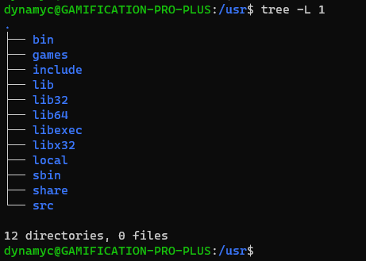
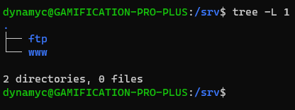
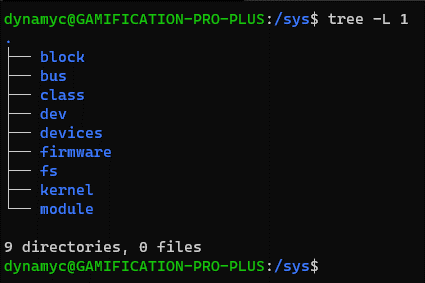
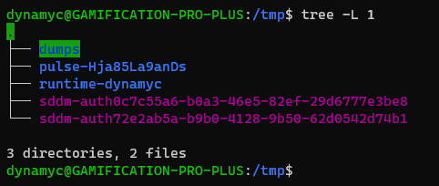
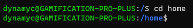
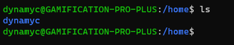
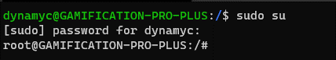

Mai napjainkban a Linux alapú rendszerek általában ugyanúgy néznek ki, de kezdő Linuxosként lehet, hogy kérdezted már azt, hogy „Mik azok a mappák, melyeket a merevlemez legalján látok? Mire jók?”
Nos, ezen mappák legtöbbje a rendszer futtatásához szükséges (nah, ki gondolta volna, Sherlock), de tényleg, mire is jók?
A /bin mappa az binárisaidat, azaz a rendszered alapvető alkalmazásaid tartalmazza, mint például az ls, vagy akár a firefox. Máshol is találhatók „bin” nevű mappák, de azokról később beszélek.

Ez a mappa meglepően az indításhoz szükséges fájlokat tartalmazza. Most mondom: NE NYÚLJ HOZZÁ!
Egy fájl törlése vagy akár átnevezése is végzetes lehet a rendszereden, úgyhogy kerüld az ebben a mappában történő nyúlkálást, hacsak nem tudod mit csinálsz.
Aggódnod viszont nem kell, hogy véletlen kitörölsz valamit innen, mert Superuser nélkül nem tudsz ebben a mappában semmit változtatni.

Ez a mappa az eszközeidnek az elérési pontjai.
Ezek a fájlok indításkor, vagy akár futtatás közben is létrejöhetnek. Ha bedugsz egy USB eszközt a gépedbe, innen eltudod érni, legyen az Pendrive, vagy egy Webkamera.

Ebben a mappában lehet, hogy összezavarodsz. Nyugi, én is úgy voltam.
Eredetileg, a Linux korai napjaiban, ez a mappa az „et cetera” nevezést hordozta, ahol olyan dolgokat tároltak, melyeknek helyét nem tudták hova meghatározni.
Mai napjainkban inkább egy olyan hely, ahol a rendszernek azon fájlait tartja a Linux, melyek a rendszered beállításaid tartalmazza. Például a rendszered nevét, felhasználóit, jelszavait, a gépeddel egy hálózaton levő gépek nevét, és hogy a merevlemezeidet hova kéne csatlakoztatni.
Ha még új vagy a Linux világában, nem ajánljuk, hogy nyúlkálj nagyon itt, hacsak nem tudod, hogy működik ez az egész.
Ez a mappa a gépen levő felhasználók személyes fájlait tartalmazza. A mappa neve a felhasználónévből jön, esetemben /home/dynamyc létezik. Ezekben a mappákban általában biztonságban nyúlkálgathatsz.
Ezen a helyek az alkalmazásoknak a könyvtárjai élnek. Ezt Windows alatt „DLL”-nek, vagy „Dynamic-link Library”-nak ismerheted. Ezek segítségével tudja a rendszered kirajzolni az ablakokat, az egeredet feldolgozni és merevlemezre küldeni fájlokat.
Ebben a mappában legfőképpen a legfontosabb kernel modulokat tartalmazza, olyasmik, mint a Windowsban az illesztőprogramok.

Ebbe a mappába olyan eszközök csatolódnak fel, mint a frissen bedugott Pendrive-od.
Ez régen még nem létezett, mert nem voltak olyan eszközök, melyeket könnyen le- és
felcsatolni lehetett volna. Egyszerűen nem voltak támogatottak.
Ebbe a mappába a forráskódokból készített programok kerülnek, néha. /opt/bin-be az alkalmazások, /opt/lib-be a könytárak.
Ez a mappa, mint a /dev, egy virtuális mappa. Ez a mappa a géped hardwaréről és a Linux kernelről tartalmaz információkat. Ugyanúgy ezek gép indításakor és futtatása közben is létrejöhetnek.
Ez a Superuser (másnéven „Adminisztrátor”) mappája. NE ide pakold a fájlaidat, nem arra van. Használd a /home-ban levő mappád erre.
Ez a mappa az éppen futó alkalmazásoknak az ideiglenes fájlait tartalmazza. Megint csak, NE NYÚLKÁLJ IDE, vagy az alkalmazásaid, lehetségesen a teljes rendszered lecrashelhet.
(a WSL mappa az a Windows Subsystem for Linux miatt van ott. Ha natívan futtatod, nem lesz ott.)
Ez a mappa a Superuser-nek a /bin mappája. Itt olyan parancsok vannak, melyek telepíteni, törölni, vagy formázni tudnak.
sudo-val kell őket futtatni őket, úgyhogy nagy bajok nem lesznek, amíg vigyázol.
Eredetileg ez volt a felhaszálók home mappája. Viszont mai napokban minden össze-vissza dolgot itt tart a rendszer.
Néhány alkalmazás is van itt, könyvtárak, háttérképek, parancsok dokumentációi, és még sok más, ami alkalmazásoknak kellhet.
Láthatsz bin, sbin és lib mappákat is. De mivel másabbak? Nem sokkal mai napjainkban.
Eredetileg a legalsó /bin mappában a legalapvetőbb parancsok voltak (például ls, mv, rm).
Ezek a rendszer legfőbb működtetéséhez kellettek, viszont a /usr/bin-ben voltak a többi parancsok, melyek annyira nem voltak fontosak, a rendszer technikailag el tudott volna indulni nélküle, mint például a böngészők, szövegszerkesztők, stb.
A mai napokban míg a Debian, Ubuntu és a Mint nem követte ezt, néhány disztribúció (Arch és társai) az összes alkalmazást a /usr-ben tartja, és csak csatolásokat hoz létre a többi mappa helyére, melyek pl. a usr-nek a bin-jébe mutatnak.
Ez a mappa a szervereknek adatai, melyeket lehetségesen futtathatsz. Ha webszervert futtatsz, vagy /srv/http, vagy /srv/www alatt lesznek a fájlok. Ha FTP szervert futtatsz, akkor /srv/ftp alatt keresd. Stb.
Ez is egy virtuális mappa. Itt minden csatlakoztatott eszközről találsz információt. Néhány dolgot változtathatsz is fájlok szerkesztésével, mint például laptopod képernyőjének fényességét.
NE NYÚLKÁLJ ITT, ha nem tudod mit csinálsz.
Ebben a mappában az ideiglenes fájlok vannak, melyek alkalmazásaidnak (lehet) nem kell abban a pillanatban, de később használhatja.
Ezt a mappát te is tudod használni ideiglenes fájlokra, mert ezen azok a mappákhoz tartozik, melyhez nem kell Superuser ahhoz, hogy nyúlkálj itt.
Eredetileg ez a mappa a sokszor változtatott értékekre volt, de mai napjainkban már az elnevezése kicsit elavult, mivel nem ő az egyedüli mappa, amely sokszor változik.
Itt legtöbbször „log”-okat (alkalmazások által készített naplókat) a /var/log mappában.
Ubuntu alatt láthatsz itt egy /snap mappát is, mely egy másik féle csomagkezelő, és itt tartja az összes Snap alatt telepített alkalmazásaid.
Ha körbe szeretnél nézni a fájlrendszereden, használhatod a
parancsot.
(a cd ~ paranccsal a jelenlegi felhasználó /home mappájába kerülünk, ahol minden biztonságos :) )
Ha nem tudod, hogy hol vagy jelenleg, használd a
parancsot.
Ez megmutatja a jelenlegi helyzetedet a fájlrendszerben.
Az
nevű paranccsal kilistázhatjuk a jelenlegi mappánk tartalmát.
A
paranccsal kilistázhatod a teljes fájlfát.
(ha nincs feltelepítve, a csomagkezelőd segítségével le tudod tölteni.)
És legutolsó sorban, a
paranccsal tudsz Superuser módra váltani. Ebben a módban MINDENHEZ hozzáférsz, úgyhogy csak ésszel használni.
Nyugodtan bárhova bemehetsz, azzal kárt nem tehetsz, hogy mappákat listázol ki.
Fejl≈ëdni meg csak akkor fogsz tudni, ha megismered a rendszered. üòâ
Készítette: Sebestyén Bálint